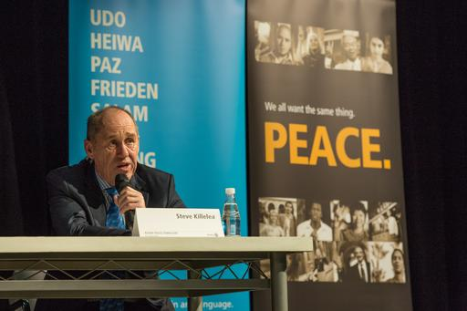

|
1905 |
El abogado Paul P. Harris de Chicago, Illinois, EE.UU., pone en práctica su idea de formar un nuevo tipo de agrupación para forjar lazos profesionales y amistosos. El 23 de febrero invita a tres de sus amigos a una reunión y siembra la semilla de la organización de clubes de servicio más antigua y de más prestigio del mundo. A medida que el club continúa reuniéndose y creciendo, se reúnen de manera rotatoria en las oficinas de cada uno de los socios y la agrupación comienza a denominarse Club Rotary de Chicago. Aunque las primeras reuniones se centraron en la promoción del compañerismo, pronto los fundadores iban a descubrir una finalidad más altruista. Transcurrido un año, el club comienza a formular sus principios básicos en forma de estatutos (conocidos más adelante como la Plataforma de Rotary), que se transformarán más tarde en el Objetivo de Rotary.
Para honrar la fundación de Rotary, el 23 de febrero se ha designado Día de la Comprensión y la Paz Mundial y el mes completo se considera Mes de la Comprensión Mundial. |
|
1907 |
El Club Rotary de Chicago efectúa su primer proyecto de servicio en la comunidad: la instalación del primer servicio higiénico público. A medida que sigue creciendo el club, amplía su alcance más allá de los intereses profesionales y sociales de los socios, y el servicio cívico adquiere más importancia. “Al igual que mis compañeros, aprendí a dar más importancia a dar que recibir”, añadiría más adelante el fundador de Rotary. Los ideales de Rotary tienen eco fuera de Chicago y, en 1908 se funda el segundo club rotario en San Francisco, California, Estados Unidos.
|
|
1910 |
Rotary se expande raudamente por todo Estados Unidos, contando ya con 16 clubes y 1800 socios. La “Asociación Nacional de Clubes Rotarios de Estados Unidos” celebra su primera Convención en Chicago, en la cual se elige como presidente a Paul Harris. Pero dicha asociación pronto deja de ser sólo “nacional”: en noviembre se funda el Club Rotary de Winnipeg (Manitoba, Canadá), con lo cual la entidad adquiere carácter internacional. |
|
1919 |
Se funda el Club Rotario de Manila, Filipinas, y comienza la expansión de Rotary en Asia. En los próximos dos años se forman clubes en Calcuta, India, Shanghai, China y Tokio, Japón. A fines de la Primera Guerra Mundial, Europa Continental abre sus puertas a Rotary y surgen clubes en Francia, Alemania, España y Suiza. En dos años, Rotary se extiende a África y Australia y el número de clubes rotarios del mundo asciende a 1000. |
|
1922 |
Se adopta por vez primera el nombre de Rotary International, dejando atrás la designación de “Asociación Internacional de Clubes
Rotarios”. |
|
1943 |
Desde la aparición de los primeros clubes, los rotarios se enfocaron en la promoción de elevadas normas de ética profesional. En 1943, Rotary International adopta oficialmente la Prueba Cuádruple, una de las declaraciones de ética profesional más difundidas y citadas del mundo. El rotario de Chicago, Herbert J. Taylor, quien fue presidente de RI en 1954-1955, redactó la primera Prueba Cuádruple de 24 palabras cuando se le solicitó que salvara de la quiebra a una empresa de fabricación de aluminio afectada por la Gran Depresión. Este “patrón de ética” fue traducido a 100 idiomas. |
|
1945 |
La Segunda Guerra Mundial constituye un reto a la labor pro-paz de Rotary. Sin embargo, durante las matanzas de esos años, los rotarios continúan fieles a su compromiso de aliviar los horrores de la guerra. En 1940, el establecimiento del Rotary Relief Fund para ayudar a las víctimas y el resuelto llamamiento a “respetar los derechos humanos” sientan las bases para que la organización asuma un papel cada vez más activo y preponderante como promotora de la paz mundial.
Durante una serie de reuniones celebradas entre 1943 y 1945, un grupo de rotarios participa en la incipiente formación de la Organización de las Naciones Unidas. Durante la conferencia constitutiva de la ONU, se otorga a Rotary International la calidad de organismo consultivo con observadores rotarios que prestan diversos servicios en esta reunión inaugural, incluida la interpretación y la resolución de desavenencias entre los delegados. |
|
1947 |
Más de 300000 rotarios de 70 países deploran el deceso del fundador de Rotary, Paul P. Harris., Numerosas contribuciones en su honor permiten a La Fundación Rotaria de Rotary International emprender su primer programa durante el siguiente año. Bajo los auspicios del programa que posteriormente se conocerá como Becas de Buena Voluntad, 18 becarios de Rotary estudian en el exterior y cumplen funciones de embajadores de buena voluntad. Desde entonces, miles de ex becarios han proseguido carreras que promueven la paz y la comprensión mundial. |
|
1962 |
Con la inauguración del programa para jóvenes Interact, se inicia una década dedicada al establecimiento de programas oficiales en beneficio de la juventud. En 1968, después del éxito de Interact, Rotary funda Rotaract. En 1971, se amplía el programa de Seminarios de Rotary para Líderes Jóvenes (RYLA) y, un año después, tras más de cuatro décadas de organizar viajes internacionales para los jóvenes, el Intercambio de Jóvenes se convierte en programa oficial de Rotary International. Miles de chicos participan en estos programas para el fomento del liderazgo, la buena voluntad, el servicio y la comprensión internacional. |
|  |
1999 |
Rotary instituye los Centros de Rotary para Estudios Internacionales sobre la paz y la resolución de conflictos a fin de contribuir a la formación de los futuros dirigentes y diplomáticos. En 2002, la primera promoción de 70 becarios comenzó sus estudios de maestría de dos años de duración, en ocho universidades, situadas en Argentina, Australia, Inglaterra, Francia, Japón y Estados Unidos. Actualmente hay centros en Australia, Inglaterra, Estados Unidos, Japón, Tailandia y Suecia. |
|
2002 |
En la Convención de Barcelona, España, se declara libre de polio a Europa. A finales de ese año, sólo restan en el mundo siete países polioendémicos. A medida que los clubes del mundo entero prosiguen la cuenta regresiva de cara al Centenario en 2005, Rotary International se lanza a la última ofensiva contra la polio, recaudando y aportando 80 millones de dólares de los 275 millones de dólares necesarios para la erradicación total de la polio. Se cuenta con 1,2 millones de rotarios en 31.314 clubes rotarios en 166 países. |
|
2005 |
El 23 de febrero de 2005 los clubes rotarios de todo el mundo celebran el centenario de la organización. Dos clubes de Arkansas, Estados Unidos, decidieron fundar un parque recreativo con juegos integradores, para que los niños con capacidades especiales puedan jugar al igual que los demás. El parque se llama “Rotary Centennial Park”. |